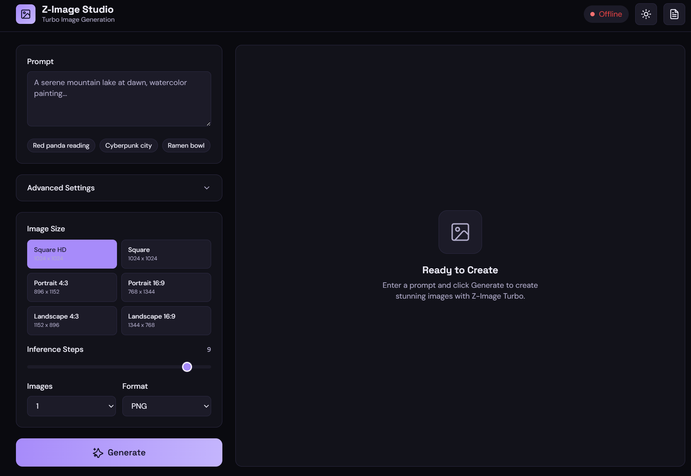

My art-direction studio with its own local image engine — single-engine Z-Image-Turbo on an RTX 5070, served over FastAPI. I art-direct the concept, then I generate the pixels — no cloud queue in between.
I split my old art-director setup into two roles that actually fit how I work: studio-designer owns visual direction and generation, studio-engineer owns build and verify. One repo holds both — the studio and its engine.
The question I kept hitting: "Can my own RTX card become a serious, always-on studio — not a cloud tab I rent by the image?"
WCD Creative Studio is my answer — an art-direction practice backed by a single-engine Z-Image-Turbo server I run myself. I direct, I generate, I ship.
I chose Option B and made it practical on a 12GB RTX 5070: a self-hosted single-engine service. The hard part isn't the model — it's staying VRAM-safe while I art-direct at full speed.
Generation is slow. My UI never waits on it. I mirror the FAL.ai pattern: submit a job, poll for status, fetch the result. My interface stays instant while a background worker owns the heavy inference.
Queue presets, not guesswork. My UI never blocks on a generation.
POST /submit → returns a request_id · GET /status/{id} → IN_QUEUE / IN_PROGRESS / COMPLETED · GET /result/{id} → the images, seed, and timings.
I cap queue depth, retry failed jobs, and expire completed results after a TTL. Presets do the sizing discipline so I don't OOM mid-batch.
Z-Image-Turbo is ~19.8 GB on disk — bigger than my 12 GB VRAM. So I treat VRAM as a rotating resource: CPU offload holds what doesn't fit, and MAX_IMAGE_SIDE 1024 caps the peak that actually matters.
I wanted zero ceremony: no Docker, no CUDA archaeology. Two scripts and I'm live on the machine I already own.
Two scripts. One port. My own studio, always on.
A server is only useful if I can drive it fast. My bundled static UI is a single working surface — prompt, preset, generate — and every click maps 1:1 to the HTTP API.
Cmd/Ctrl+Enter to generate; seed + randomize when I need a keeper.num_images (1–4), PNG/JPEG output./api/history strip of recent outputs.
Everything my UI does is also available over HTTP — an async queue for real work, plus a synchronous endpoint for quick calls. Interactive Swagger lives at /docs.
POST /submit → request_id · GET /status/{id} → IN_QUEUE / IN_PROGRESS / COMPLETED / FAILED · GET /result/{id} → images, seed, timings.
prompt (required), image_size (preset or custom), num_inference_steps (1–10), guidance_scale (0–20), negative_prompt, seed, num_images (1–4), output_format (PNG/JPEG).Local inferencing on 12 GB isn't a free lunch. When a generation gets heavy, I reach for the same knobs in the same order.
Longest edge first. If I smell OOM, I drop MAX_IMAGE_SIDE below 1024 or pick a smaller preset. Pixels are the dominant VRAM cost.
Batch of one. I keep num_images: 1 while art-directing, then scale to 2–4 only for the final keepers.
Fewer steps. Turbo is built for low steps — I stay at the low end of 1–10 and only push higher when the composition earns it.
Offload stays on. CPU offload is non-negotiable on 12 GB. Turning it off for speed is how I OOM — I leave it on.
Serious creative tooling shouldn't require a cloud subscription. It should run on hardware a studio already owns.
My proof is small on purpose: a shiba-cafe-deck — a full set of on-brand images generated locally, art-directed and iterated like client work. Same prompt discipline, same preset logic, same queue. If it holds for a deck, it holds for a campaign.
That's the studio+engine loop I wanted: I direct the concept, my RTX renders it, and the prompts never leave my machine. No per-image fees. No vendor in between.
7-slide Shiba Cafe deck — generated locally, art-directed like client work. Open the live deck, or browse the source.
No dist on this deploy? Browse the deck source on GitHub ↗
Z-Image-Turbo is © Tongyi-MAI / Alibaba. Refer to the model card for licensing terms. Hero and UI screenshots are legacy assets carried over pending reshoot.